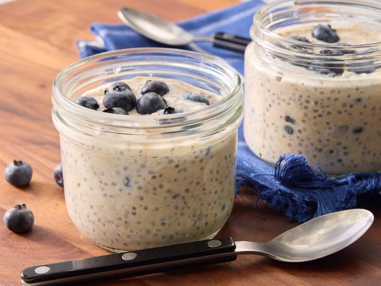

Overnight Oats

Ingredients
- 1/2 cup milk
- 1/4 cup Greek yogurt
- 1/2 cup rolled oats
- 2 teaspoons honey
- 2 teaspoons chia seeds
- 1/4 teaspoon ground cinnamon
- 1/4 cup fresh bluebrries
Steps
- Combine milk, yogurt, oats, honey, chia seeds, and cinnamon in a 1/2-pint jar with a lid
- Cover and shake until combined
- Fold in blueberries
- Cover and refrigerate, 8 hours to overnight. Enjoy!